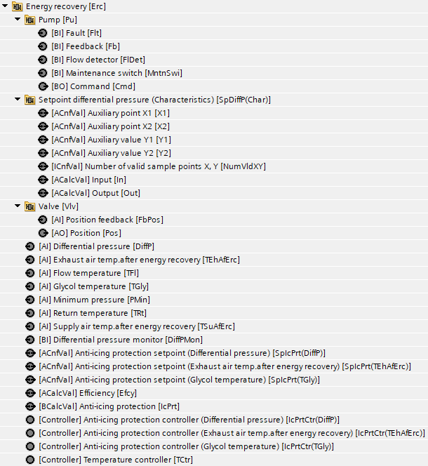
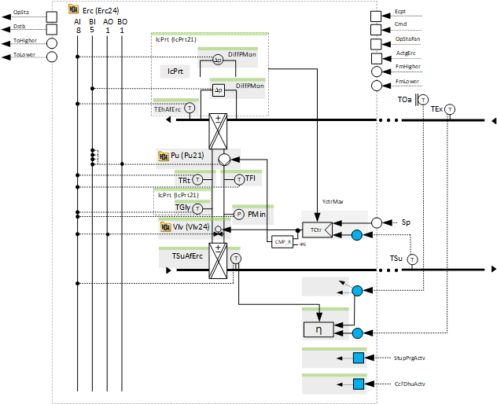
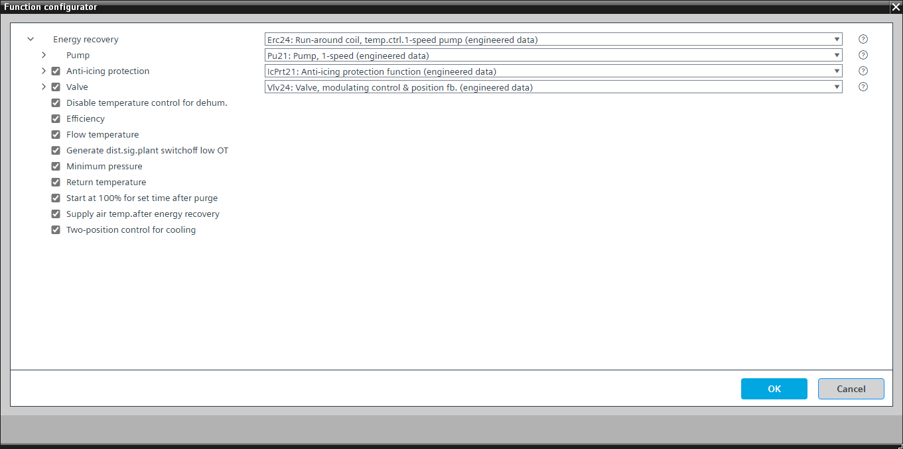

[Erc24] Run-around coil, temperature-controlled with 1-speed pump
Program block, name / node subtype: [Erc24] Run-around coil, temperature-controlled with 1-speed pump
Library hierarchy: Ventilation and air conditioning equipment
Family: Erc
Project tree | Diagram |
|---|---|
|
 |  |
Configurator


Program blocks are stored in the library without I/Os. Use the auto-create and auto-connect functions to create I/Os and/or to connect them to the interface blocks, e.g., R_A, CMD_B. Alternatively, take the I/Os from the folder containing the predefined I/Os in the library and/or from the plant and connect them to the interface blocks.
Function
Controls the supply air temperature (heating and cooling) by switching a 1-speed pump on and off and changing the valve position of an optional bypass valve.
The temperature controller dynamically changes its control action for heating or cooling based on conditions from another program block.
A temperature controller switches the pump and controls the valve position of the optional valve.
Sequence for heating
The temperature controller increases its output and switches on the pump and closes the bypass valve.
Sequence for cooling
The temperature controller switches on the pump and either goes to its maximum and fully closes the bypass valve if the option "Two-position control for cooling" is active or continuously closes the bypass valve.
Optional functions
This program block has the following optional functions:
Option: Valve (1xAO, 1xAI)
Controls the position of a bypass valve that increases or reduces the power of the energy recovery (Vlv24).
Option: After purge, start with 100 % for a configured time
Provides an interface to the state of the "Start-up purge" function and logic to keep the energy recovery at 100 % for a configurable time, e.g., 4 minutes, after the "Start-up purge" function has finished.
Option: Disable temperature control in case of dehumidification
Provides an interface (most likely to the cooling coil) and logic to disable the temperature control in case of dehumidification. This prevents the air from preheating when the cooling coil performs dehumidification and releases the temperature control after dehumidification with a short delay to start the control sequence correctly.
If the energy recovery is set for cooling, it runs at 100 %.
Option: Efficiency
Calculates the efficiency of the energy recovery. The function block MON_ERC is used in the program.
This efficiency calculation needs the option "Supply air temperature after energy recovery".
Option: Anti-icing protection (1xBI, 2xAI)
Performs anti-icing protection (IcPrt21), which limits the output of the temperature controller.
Option: Flow temperature (1xAI)
Reads the signal from a flow temperature sensor.
Option: Generate disturbance signal switching off the plant at very low outside temperature
If there is a problem with the energy recovery at very low outside temperature, the heating power may be insufficient, and the resulting supply air temperature may drop to a level that is above the frost protection, but still very uncomfortable. This is why a disturbance signal that shuts down the air handling unit plant is generated.
Option Minimum pressure (1xAI)
Reads the signal from a pressure sensor in the glycol circuit and generates an alarm if the pressure is too low.
Option: Return temperature (1xAI)
Reads the signal from a flow temperature sensor.
Option: Supply air temperature after energy recovery (1xAI)
Reads the signal from a supply air temperature sensor after energy recovery.
This is an important sensor for calculating the utilization rate of the energy recovery with ErcUtzRate21.
Option: Two-position control for cooling
2-position control mode for the temperature controller in case of cooling.
Mandatory elements
Name | Description | Type | Alarm / Notification class | Trend / Type |
|---|---|---|---|---|
|
Pu | Pump | N/A | N/A | |
TCtr | Temperature controller | Ctr: Controller | N/A | N/A |
Optional elements
Name | Description | Type | Alarm / Notification class | Trend / Type |
|---|---|---|---|---|
|
Vlv | Valve | N/A | N/A | |
TSuAfErc | Supply air temperature after energy recovery | AI: Analog input | No | Yes, 2 |
Efcy | Efficiency | ACalcVal: Analog calculated value | No | No |
IcPrt | Anti-icing protection | N/A | N/A | |
TFl | Flow temperature | AI: Analog input | Yes, 4 | Yes, 2 |
TRt | Return temperature | AI: Analog input | Yes, 4 | Yes, 2 |
PMin | Minimum pressure | AI: Analog input | Yes, 4 | Yes, 3 |
Further options
Description |
|---|
|
2-position control for cooling |
After purge start with 100 % for a configured time. |
Generate disturbance signal that switches off the plant at very low outside temperature. |
Disable temperature control in case of dehumidification |